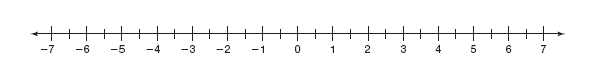
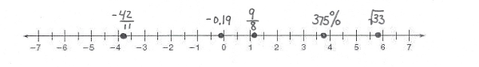
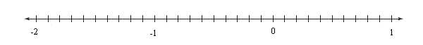
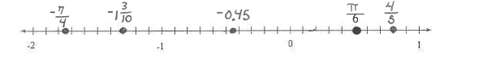

3.1 Ordering Numbers
-
Graph each number in the list on the given number line. List the numbers from smallest to largest.
\(375 \%,-\frac{42}{11}, \sqrt{33},-0.19, \frac{9}{8}\)


-
Graph each number in the list on the given number line. List the numbers from smallest to largest.
\(-0.45, \frac{4}{5},-1 \frac{3}{10},-\frac{7}{4}, \frac{\pi}{6}\)


- Which box of Raisin Bran is the best buy? Justify your selection.
- 14-ounce box for $1.98
- 25-ounce box for $2.59
- 1-ounce mini box for $0.20
- 76-ounce box from Sam's Wholesale for $7.48
The 76-ounce box is the best buy because the price per ounce is the lowest at $0.098 per ounce.
- Compare each number to 0.05 using <, >, or =. Example: The given number is 0.13, so 0.13 > 0.05
- 0.004
0.0004 < 0.05 - 0.0921
0.0921 > 0.05 - 0.0001
0.0001 < 0.05 - 0.3863
0.3863 > 0.05
- 0.004
- Compare each number to 0.10 using <, >, or =.
- 0.9072
0.9072 > 0.10 - 0.0032
0.0032 < 0.10 - 0.01
0.01 < 0.10 - 0.1056
0.1056 > 0.10
- 0.9072
- Determine whether the given number is less than -2.0.
- -2.5
yes - -3.1
yes - -0.4
no - -1.9
no
- -2.5
- Determine if the given number is within the interval (0.58, 0.74).
- 0.65
yes - 0.53
no - 0.73
yes - 0.8
no
- 0.65
- Determine if the given number is within the interval (47.6, 51.2).
- 42
no - 45.9
no - 50
yes - 49.35
yes
- 42